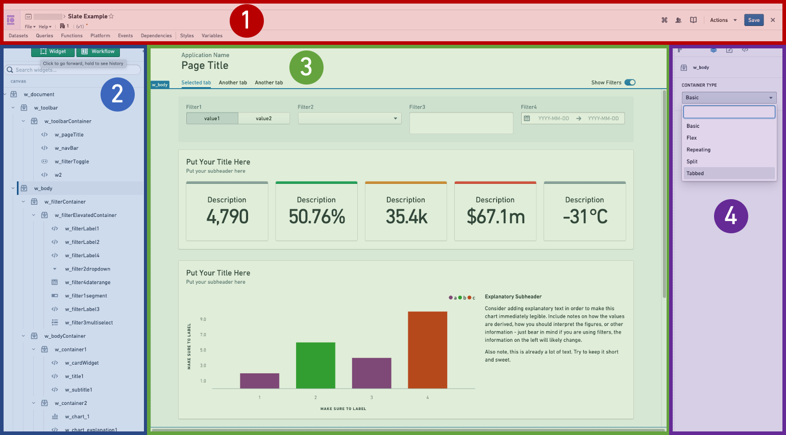
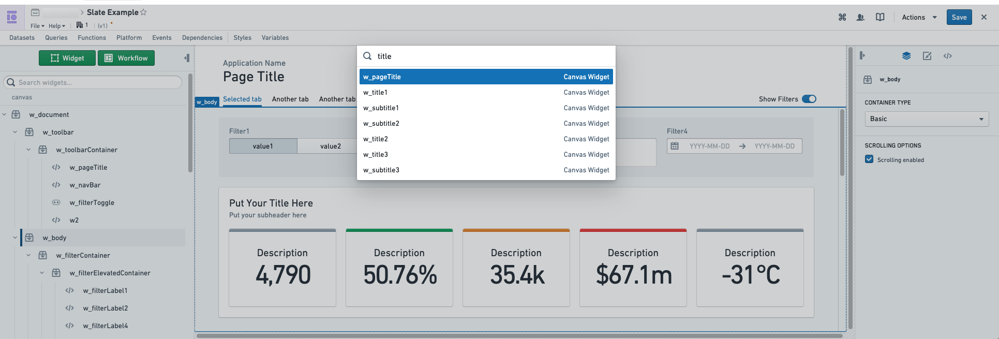
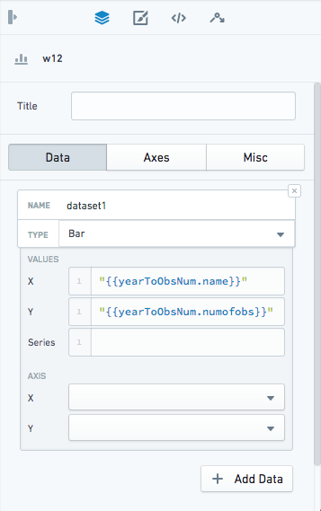
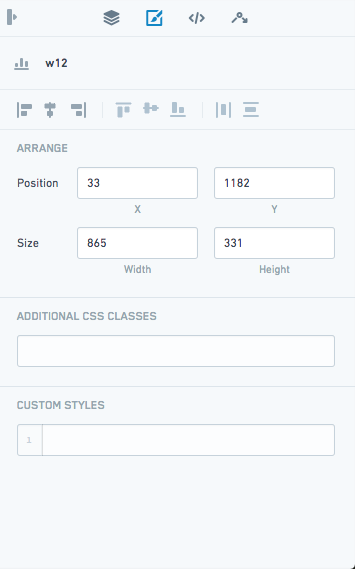
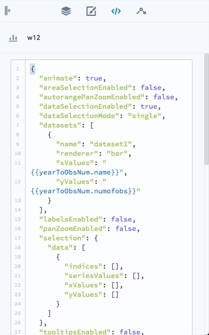
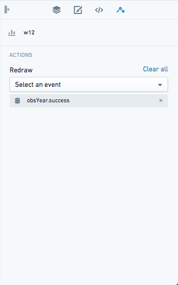

There are four main areas of Slate in edit mode:

Additionally, there are panels that pop out in front of the canvas:
The global search in editor mode, accessed with the keyboard shortcut Cmd+K (macOS) or Ctrl+K (Windows), allows you to search and go to Slate queries, functions, objects, variables and widgets. Slate's global search will also keep a history of your searches to prioritize recent results. Selecting the result will open up the appropriate Slate editor panel.

Slate supports undoing deletions for all resource types, including widgets, folders, dataset syncs, functions, object sets, object contexts, variables, queries, partials, event-actions, and container tabs. To undo a deletion, select the undo button in the toast that appears after the deletion, or use the keyboard shortcut Cmd+Z (macOS) or Ctrl+Z (Windows).
Undoing a widget deletion restores its event and action wirings, including cases where a surviving widget's event was wired to the deleted widget's action. Only one undo toast is displayed at a time: a new deletion replaces the previous toast, and any document edit dismisses the pending toast.
The Widget Editor has three tabs with editing options for the selected widget.
Property tab: This is the main editing tab. Use this tab to change the widgetâs properties. The options available vary by type of widget.

Layout tab: Set the position and size of your widget, and apply custom styling.

JSON tab: If the Property tab does not provide the setting you need, edit the widget's raw JSON configuration in this tab. Each widget starts with template code containing the most commonly used attributes, and fields changed in the Property tab also appear in the JSON tab. The editor displays JSON errors and enables Update only after you make a valid change. For interaction properties with long values, select Show more to expand or collapse the full content.
:::callout{theme="warning"} State that is not exposed through the Property tab is managed internally by Slate, so you should closely review any modifications you make to Slate's default values in the JSON tab to avoid unexpected behavior. :::

Events tab: Some widgets have associated events, which you can configure here.
